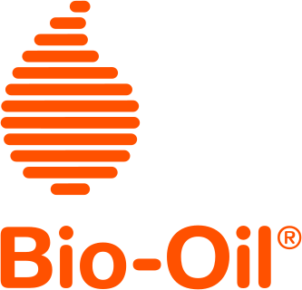

Bio‑Oil researches and develops specialist skincare products, using oil to achieve superior product performance. The brand is known as Bio‑Oil® in all countries other than Austria, Czech Republic, France, Germany, Slovakia and Switzerland where the name Bi-Oil® is used and in Japan where the name Bioil® is used.